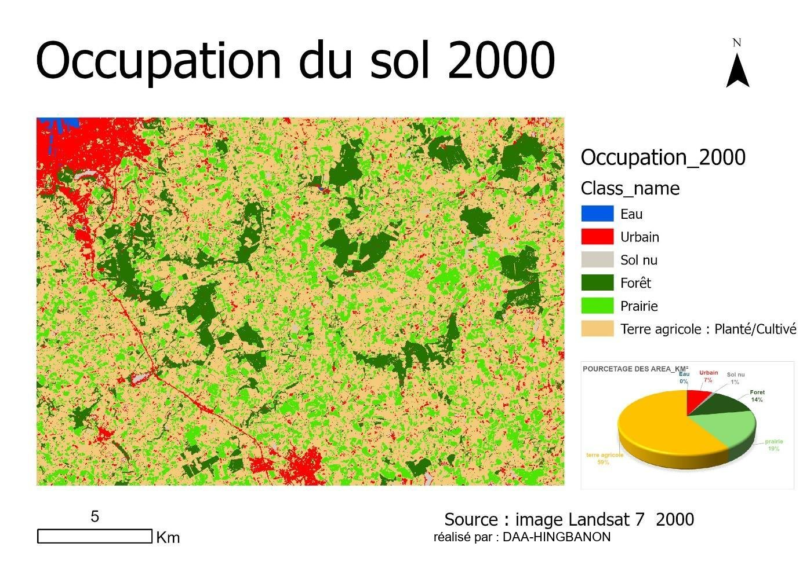
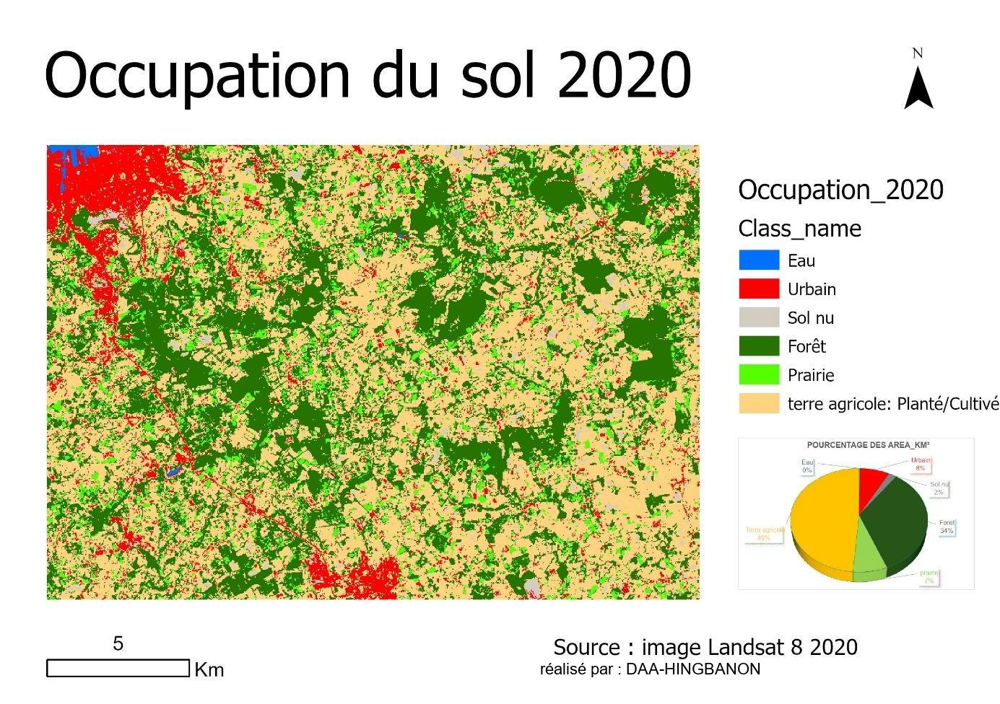

Géomatique, Limnologie, Environnement et Territoires · Université d'Orléans
Occupation du sol par télédétection (2000-2020)
Analyse spatio-temporelle autour de Cherbourg-en-Cotentin à partir d'images Landsat
Contexte et objectif
L'occupation du sol est un indicateur clé des dynamiques territoriales et de leurs impacts sur la biodiversité et les ressources naturelles. Ce travail analyse, par télédétection, l'évolution de l'occupation du sol entre 2000 et 2020 sur une zone de 20 km à l'est et 15 km au sud de Cherbourg-en-Cotentin (Normandie), un territoire mêlant terres agricoles, espaces naturels et zones urbanisées, afin de quantifier et d'expliquer les changements observés sur deux décennies.
Démarche et outils
L'étude s'appuie sur des images Landsat 7 (capteur ETM+) et Landsat 8 (capteurs OLI/TIRS) téléchargées via USGS EarthExplorer, découpées sous QGIS sur la zone d'étude délimitée avec Google Earth Pro, puis ré-échantillonnées de 30 à 15 m de résolution. Après fusion des bandes et composition colorée, une classification supervisée par maximum de vraisemblance a permis de distinguer six classes d'occupation (eau, urbain, sol nu, forêt, prairie, terre agricole), à partir d'échantillons d'entraînement. La fiabilité des classifications de 2000 et 2020 a été vérifiée par matrice de confusion avant l'analyse comparative des deux dates.
Résultats
Entre 2000 et 2020, les terres agricoles reculent de 59 % à 49 % de la surface (2 191 à 1 792 km²), tandis que la forêt progresse fortement de 14 % à 34 % (517 à 1 250 km²), signe probable d'une reforestation ou d'un abandon de terres agricoles. Les zones urbaines augmentent modérément, de 7 % à 8 % (263 à 283 km²), concentrées autour de Cherbourg-en-Cotentin, pendant que les prairies chutent nettement de 19 % à 7 % (717 à 272 km²), probablement converties en terres agricoles ou urbanisées. Les sols nus doublent (1 % à 2 %) et les zones d'eau restent marginales et stables sur toute la période, illustrant un territoire en transition entre pression urbaine, dynamiques agricoles et reforestation.

